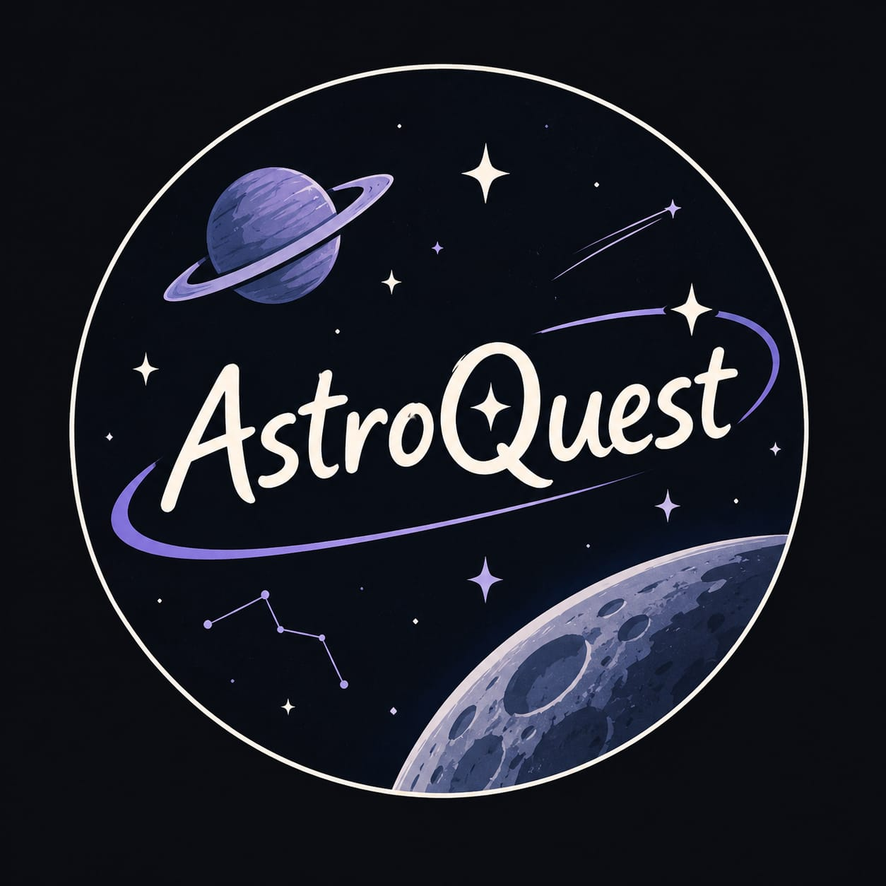
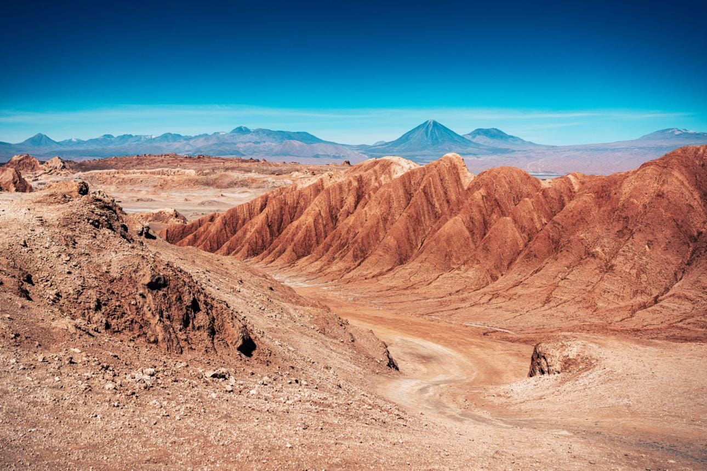
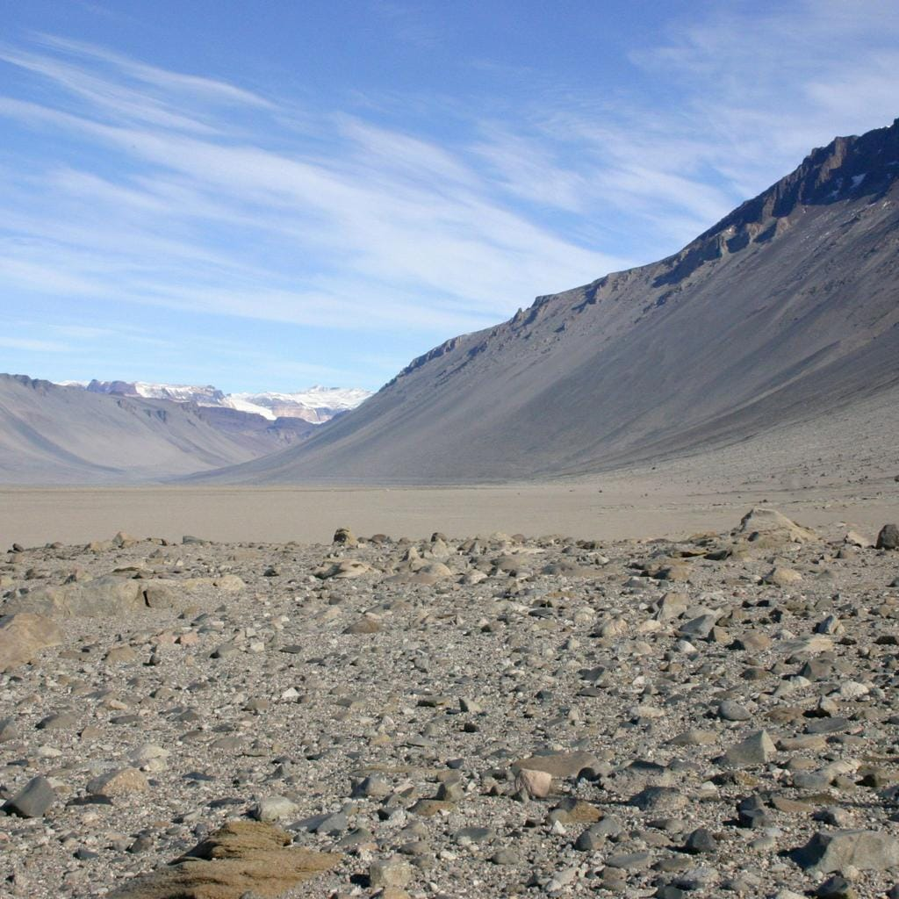
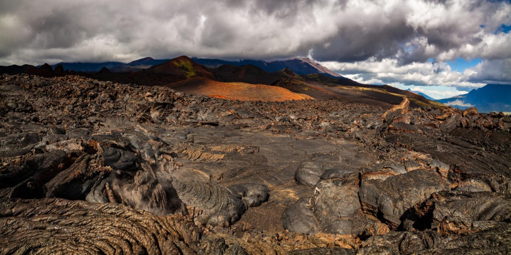

Explore Earth
Identify extreme environments that share selected characteristics with the Moon and Mars.

ASTROQUESTDiscover Earth's extreme environments and explore how they help scientists prepare for future missions to the Moon and Mars.
OUR PURPOSE
Why do scientists study extreme environments on Earth?
Identify extreme environments that share selected characteristics with the Moon and Mars.
Investigate geology, temperature, terrain, water, dust and environmental challenges.
Understand how Earth research can support future robotic and human exploration missions.
THREE EXTREME ENVIRONMENTS
Explore three remarkable places that help us understand selected conditions beyond Earth.

CHILE 01EXTREME ARID ENVIRONMENT
One of the driest places on Earth. Its extreme aridity and soil conditions make it valuable for studying selected aspects of Mars exploration.

ANTARCTICA 02POLAR DESERT ENVIRONMENT
A cold, dry Antarctic landscape with exposed rock, frozen ground and unusual water systems. It offers insights into polar and cold-desert processes.

HAWAII 03VOLCANIC HIGH-ALTITUDE TERRAIN
A high volcanic mountain with rocky terrain and volcanic materials. Its landscape can support research into geology and exploration operations.
GEOGRAPHIC EXPLORATION
Locate our three Earth analog environments on a real interactive geographic map.
SCIENCE & DISCOVERY
What can these environments teach us about the Moon and Mars?
| Research Factor | Earth Analog | Space Relevance |
|---|---|---|
| Extreme dryness | Atacama Desert | Mars surface research |
| Cold and ice | McMurdo Dry Valleys | Polar environments and ice studies |
| Volcanic rocks | Mauna Kea | Planetary geology and terrain research |
| Field operations | All three locations | Testing equipment and exploration methods |
IMPORTANT SCIENTIFIC NOTE
Earth analogs are useful research environments, but none of them perfectly reproduces the Moon or Mars.
Gravity Earth's gravity is different from lunar and Martian gravity.
Atmosphere The Moon has almost no atmosphere, while Mars has a very thin atmosphere.
Radiation Earth's magnetic field and atmosphere provide protection that is not available in the same way on the Moon and Mars.
EXPLORE REAL SCIENCE
Discover trusted scientific data and official space exploration resources.
Discover Mars, its surface, climate and exploration missions.
VISIT NASAExplore lunar science, geology and future exploration.
VISIT NASAAccess Earth observation data and environmental research.
VISIT NASARead about NASA missions, discoveries and research.
VISIT NASAOUR VISION
By studying Earth's most extreme environments, we can develop better questions, tools and strategies for exploring worlds beyond our own.
Back to the Beginning